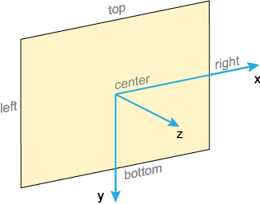

transform-origin
Устанавливает координаты точки, относительно которой будет происходить трансформация элемента.
Краткая информация
| Значение по умолчанию | 50% 50% 0 |
|---|---|
| Наследуется | Нет |
| Применяется | К трансформируемым элементам |
Синтаксис
transform-origin: <x> <y> <z>Значения
- <x>
-
Координата по оси X. Может принимать следующие значения:
<размер> | <проценты> | left | center | right
Здесь <размер> — любая единица измерения CSS.
- <y>
-
Координата по оси Y. Может принимать следующие значения:
<размер> | <проценты> | top | center | bottom
- <z>
-
Координата по оси Z. Может задаваться только в любых корректных единицах для измерения длины (исключая проценты).
Оси и значения показаны на рис. 1.

Рис. 1. Оси при трансформации элемента
Пример
<!DOCTYPE HTML>
<html>
<head>
<meta charset="utf-8">
<title>transform-origin</title>
<style>
div {
background: #fc0;
padding: 10px;
display: inline-block;
border: 1px solid #000;
}
div:hover {
/* Точка поворота в правом верхнем углу */
transform-origin: 100% 0;
/* Поворачиваем на 20 градусов против часовой стрелки */
transform: rotate(-20deg);
}
</style>
</head>
<body>
<div>Пример</div>
</body>
</html>В данном примере при наведении курсора на элемент он поворачивается на 20 градусов против часовой стрелки относительно правого верхнего угла.
Объектная модель
Объект.style.transformOrigin
Примечание
Internet Explorer 9 поддерживает свойство -ms-transform-origin.
Chrome до версии 36 и Android до версии 4 поддерживают свойство -webkit-transform-origin.
Safari поддерживает свойство -webkit-transform-origin.
Opera до версии 12.10 и с версии 15 до 23 поддерживает свойство -o-transform-origin.
Firefox до версии 16 поддерживает свойство -moz-transform-origin.
Спецификация
| Спецификация | Статус |
|---|---|
| CSS Transforms Level 1 | Рабочий проект |
Браузеры
| Internet Explorer | Chrome | Opera | Safari | Firefox | ||||||
| 9 | 10 | 5 | 36 | 10.5 | 12.10 | 15 | 23 | 3.1 | 3.5 | 16 |
| Android | Firefox Mobile | Opera Mobile | Safari Mobile | ||
| 2.1 | 4 | 3.5 | 16 | 11.5 | 3.2 |